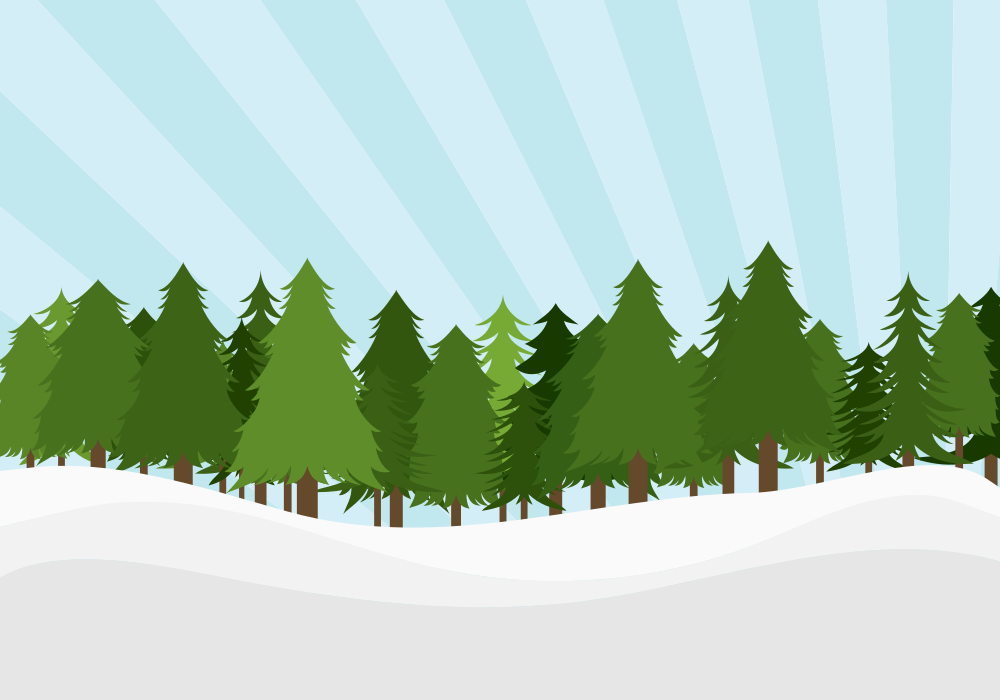
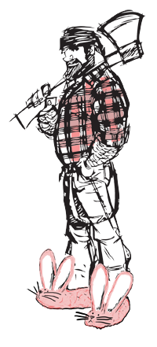

BENNINGTON PURCELL / INTERNET ENTHUSIAST
Serious
curiosity.
Playful things.
Technologist. Entrepreneur. Inveterate tinkerer.
I help people make sense of AI. And make things
just to see what happens.
A little code. A lot of “what if?”
Keep scrolling. Things get carried away.

CURIOUS.EST. NEVER FINISHED
A SMALL THOUGHT. AN UNREASONABLE TRAJECTORY.
What if?
That’s usually how it starts.
01 / THE EXPERIMENT DEPARTMENT
Follow a rabbit hole.
Browser games, curious tools, musical detours. Built by prompting AI, then asking it to try again. These are a few doors in.
02 / THE PERSON BEHIND THE TABS
Been building.
Still playing.
I’m Bennington. I started writing code professionally in 1999, at 13, with QBasic. A few companies and exits later, curiosity is still the through line.
These days I consult, helping people figure out what AI means for their work. VibeGames is my hands-off-the-keyboard experiment: games, music tools, visualizations, and the occasional glorious wrong turn.
Some things are useful. Some things are just fun.
There’s room for both.